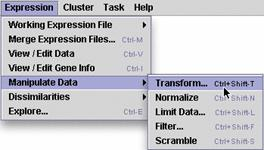
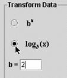
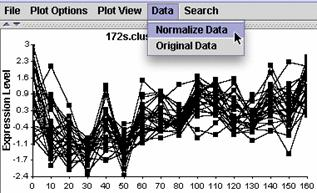
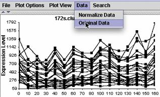

(8) Manipulate Data
| Although this step sounds like a point and click way to conduct scientific fraud, it is actually a beneficial step to consider (see Instructor's Guide). You can: transform or normalize your data; temporarily restrict your data analysis to a subset of experimental conditions (e.g. certain time points, or dye reversals); filter out some features that don't meet certain criteria; or generate a random set of data to use as a comparison. |  |
If you manipulate your data, you will generate a collection of new expression files with names that match the manipulation. MAGIC Tool will never erase your data, so the result of any of these data manipulations is stored in a new file, and the original file still exists as it was before the manipulation. Be sure to verify which expression file you are working with in subsequent steps. It is easy to get confused. The current file is checked on the list under "Working Expression File."
If you are working with ratio data, you should log transform your data. This will convert your ratios into values that are on the same numerical scale so that a gene that is 4 fold induced (+2) has the same numerical value as a gene that is 4 fold repressed (-2 instead of 0.25). Typically, this is done using a log2 transformation to indicate the number of two fold changes in gene expression (thus 4 fold changes resulted in numerical values of 2).
If you are working with absolute expression values (e.g. Affymetrix data) you may want to normalize your ratios. Normalizing in this case is on a gene-by-gene basis. For each gene, the mean value across the columns is subtracted from each value, resulting in an expression profile with a mean of 0. Then each value is divided by the standard deviation across the columns, resulting in an expression profile with a standard deviation of 1. This type of normalization is especially useful for viewing groups of genes on the same scale, so similarities are more easily seen when absolute expression levels vary greatly from gene to gene. Later, when you plot the various groups or clusters of genes, you can view the data in as normalized or original values, as shown in the following figure.
 